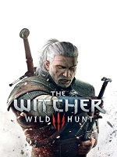
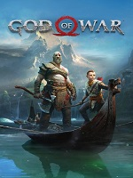
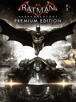

В центре сюжета ведьмак - убийца чудовищ - Геральт из Ривии,
прозванный в народе Белым Волком. Спустя 7 лет жизни с амнезией,
Геральт наконец возвращает себе память. Ведьмак решает отыскать Йеннифэр,
и след приводит его в Нильфгаард, где чародейка служит при дворе императора.
Йеннифэр рассказывает, что Цири вернулась, и что ей грозит опасность:
Призрачные Всадники Дикой Охоты под предводительством Эредина Бреакк Гласа
- Короля Охоты идут за девушкой по пятам. Геральт решает во что бы ни стало
отыскать Цири и защитить ее от Эредина и его Всадников.
 На дворе 1899 год. Эра беззакония подходит к концу.
Большинство банд либо уже уничтожены, либо их время
исходе. Сюжет разворачивается вокруг банды ван дер Линде,
после неудачного ограбления в городке Блэкуотер, бандитам
пришлось бежать, оставив позади все свои пожитки и нескольких
членов банды. Разбойникам под предводительством харизматичного
Датча ван дер Линде приходится начинать все с начала, попутно
скрываясь от охотников за головами и детективами "Пинкертона".
На дворе 1899 год. Эра беззакония подходит к концу.
Большинство банд либо уже уничтожены, либо их время
исходе. Сюжет разворачивается вокруг банды ван дер Линде,
после неудачного ограбления в городке Блэкуотер, бандитам
пришлось бежать, оставив позади все свои пожитки и нескольких
членов банды. Разбойникам под предводительством харизматичного
Датча ван дер Линде приходится начинать все с начала, попутно
скрываясь от охотников за головами и детективами "Пинкертона".

Игра является последним вышедшим на данный момент сиквелом
God of War 2005-го года. Сюжет продолжает историю Кратоса
- яростного и жестокого бога войны, убийцы Олимпийцев -,
после уничтожения Греческого мира Кратос осел вдругом мире,
на территории другого пантеона богов - асов из Асгарда.
Кратос остепенился, пытался забыть свое прошлое, но действия
асов, в особенности одного из сыновей Одина Бальдра заставили
спартанца снова взяться за оружие. Призрак Спарты вернулся.

Игра является последней из серии Arkham и рассказывает
о последней ночи Бэтмена. После Аркхем-Сити Бэтмен
начал постепенно сходить с ума из-за крови Джокера,
которую безумный клоун закачал в него, чем воспользовался
другой его старый противник - Джон Крейн, более известный
как Пугало. Хоть Пугало и заявляет всему миру, что его цель -
Готэм и все Западное Побережье, на самом деле он хочет две
вещи: увидеть падение Бэтмена и показать всем, что даже
Темный Рыцарь всего лишь человек, которого можно сломать.